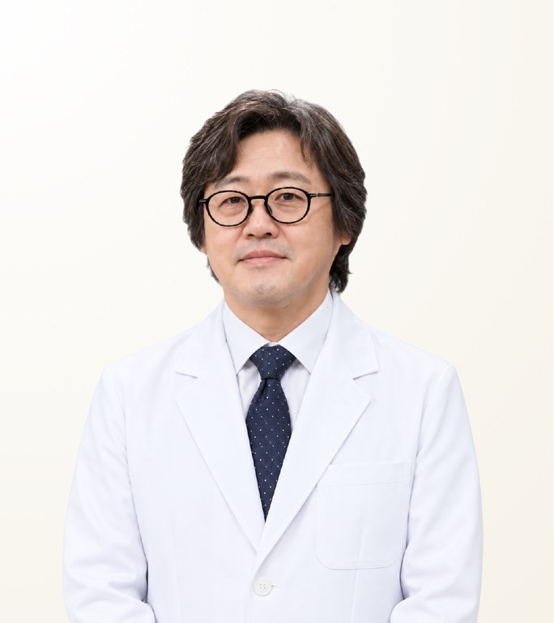

STMSTYLE 확인 의료진
황종대
Whang Jong-Dae · ฮวัง จงแด
미예담산부인과 · 산부인과 전문의
- 질축소수술
- 소음순·대음순성형
- 여성성형 재수술
- 경력
- 25년 이상 경력(1997년부터)
- 임상 경험
- 10,000건 이상
- 권장 체류 일정
- 7박 8일 권장(수술 범위와 회복에 따라 조정)
원장 소개
황종대 원장은 서울 미예담산부인과의 산부인과 전문의로, 출산 후 변화까지 고려한 질축소수술, 소음순성형, 여성성형 재수술로 알려져 있습니다. 서울대학교병원과 삼성서울병원에서 수련했으며, 1997년부터 25년 이상 경력과 10,000건 이상의 경험을 쌓았고, 기능·형태·회복을 함께 고려합니다.
Case Expertise
질축소수술
출산이나 노화로 늘어난 질과 회음부를 함께 축소하는 수술입니다. 근육층, 점막, 회음부 형태를 평가한 뒤 수술 범위를 정하고, 조직 상태에 따라 레이저 또는 임플란트 방식을 선택합니다.
소음순·대음순성형
소음순의 늘어짐과 비대칭, 대음순의 볼륨 변화를 교정하며, 미적인 형태뿐 아니라 마찰이나 위생 등 일상의 불편까지 고려합니다.
여성성형 재수술
이전 수술 후 남은 비대칭, 과도한 절제, 흉터 또는 불편을 교정합니다. 조직 상태를 먼저 살핀 뒤 재수술 범위를 정하고, 한 번의 수술로 해결하기 어려운 경우에는 단계적 접근을 미리 설명합니다.
그 외 진료 가능
사용 재료 · 장비
영상
원장 Q&A 영상자세한 내용은 LINE으로 문의해 주세요진료 철학
정확한 진단을 바탕으로 필요한 진료만 권하고, 철저한 소독과 통증 부담을 줄이는 치료를 중요하게 생각합니다. 서울대학교병원 산과 수련을 통해 임신과 출산 이후 생기는 구조적 변화와 불편을 이해하며, 기능·형태·회복을 함께 고려해 환자별 수술 범위를 정합니다. 상담부터 수술과 사후관리까지 직접 살피며, 홍보보다 환자 한 사람의 결과와 신뢰를 우선합니다.
— 황종대
STMSTYLE 평가
STMSTYLE은 10년 이상 황종대 원장에게 환자를 연결하며 질성형, 소음순성형, 재수술의 상담·수술·회복 과정을 지켜봐 왔습니다. 서울대학교병원 산과 수련과 삼성서울병원 임상 경험을 바탕으로 출산 후 여성의 해부학적 변화를 깊이 이해하며, 단순히 좁히거나 모양을 바꾸는 데 그치지 않고 기능과 자연스러운 회복을 함께 고려합니다. 조용히 실력으로 신뢰를 쌓아 소개와 재방문이 이어지고 있으며, STMSTYLE이 여성성형 분야에서 자신 있게 우선 추천하는 의사입니다.
STMSTYLE경력 및 학력
전체 경력 보기
학력
- 서울대학교 의과대학·대학원 졸업
면허·자격
- 산부인과 전문의(대한민국)
경력
- 서울대학교병원 인턴·산부인과 레지던트 수료
- 삼성서울병원 부인종양학·산과학 전임의 및 산부인과 전문의
- University of California Irvine 교환교수 2004-06 – 2005-12
- 전 미래와희망산부인과 원장
- 서울대학교병원 산부인과 자문의
- 성균관대학교 의과대학 산부인과 외래부교수
- 미예담산부인과 원장
학회 활동
- 대한산부인과학회 정회원
- 대한산부인과의사회 정회원
- 대한부인종양콜포스코피학회 정회원
- 대한주산의학회 정회원
- 대한산부인과내시경학회 정회원
- 대한비뇨부인과학회 정회원
- 대한폐경학회 정회원
- 대한여성회음성형연구회 정회원
자주 묻는 질문
황종대 원장은 출산 후 질축소수술 경험이 많은가요?
네. 황종대 원장은 출산 후 변화까지 고려한 질축소수술로 알려져 있습니다. 서울대학교병원 산과 수련 경험을 바탕으로 근육층, 점막, 회음부를 평가한 뒤 기능과 회복을 함께 고려해 수술 범위를 정합니다. 최종 계획은 대면 상담에서 확정됩니다.
황종대 원장은 여성성형 재수술도 하나요?
네. 황종대 원장은 이전 수술 후 남은 비대칭, 과도한 절제, 흉터 또는 불편을 교정합니다. 기존 조직 상태를 먼저 살피며, 한 번의 수술로 해결하기 어려운 경우에는 단계적 접근을 미리 설명합니다.
황종대 원장은 어떤 재료나 방법을 사용하나요?
황종대 원장은 환자별 조직 상태에 따라 레이저, 질성형용 임플란트, 수술용 봉합 기법 중에서 선택합니다. 철저한 소독과 통증 부담을 줄이는 것을 중요하게 생각합니다.
황종대 원장에게 수술받을 경우 한국에 얼마나 머물러야 하나요?
황종대 원장의 수술 시 7박 8일 체류를 권장하며, 수술 범위와 회복에 따라 조정됩니다. 정확한 기간은 수술 계획이 확정된 후 안내해 드립니다.
황종대 원장이 직접 수술하나요? STMSTYLE을 통해 상담할 수 있나요?
황종대 원장이 상담, 수술, 사후관리를 직접 살핍니다. STMSTYLE은 10년 이상 황종대 원장에게 환자를 연결해 왔으며, 방콕에서 초기 상담과 일정을 프라이빗하게 조율해 드립니다. 최종 결정은 대면 상담에서 이루어집니다.
정보 출처
출처 및 확인 기록 보기
| 항목 | 출처 | 확인일 |
|---|---|---|
| 전문의 자격, 학력 및 경력 | 미예담산부인과 공식 홈페이지 | 2026-09-08 |
| 발표 학술 논문 | 한국학술지인용색인(KCI) | 2026-09-08 |
| 진료 항목 및 진료 방식 | 미예담 공식 진료 안내 | 2026-09-08 |
| 수술 결과 및 장기 환자 관리 | 10년 이상의 환자 연결, 대면 미팅, 환자 코디네이션을 통한 STMSTYLE 직접 확인 | 2026-09-08 |
확인 기록 · 2026-09-08
STMSTYLE은 10년 이상의 협업과 환자 연결, 대면 미팅과 상담, 환자 코디네이션, 공식 약력 및 학술 발표와의 교차 검토를 통해 황종대 원장의 프로필을 확인했습니다.